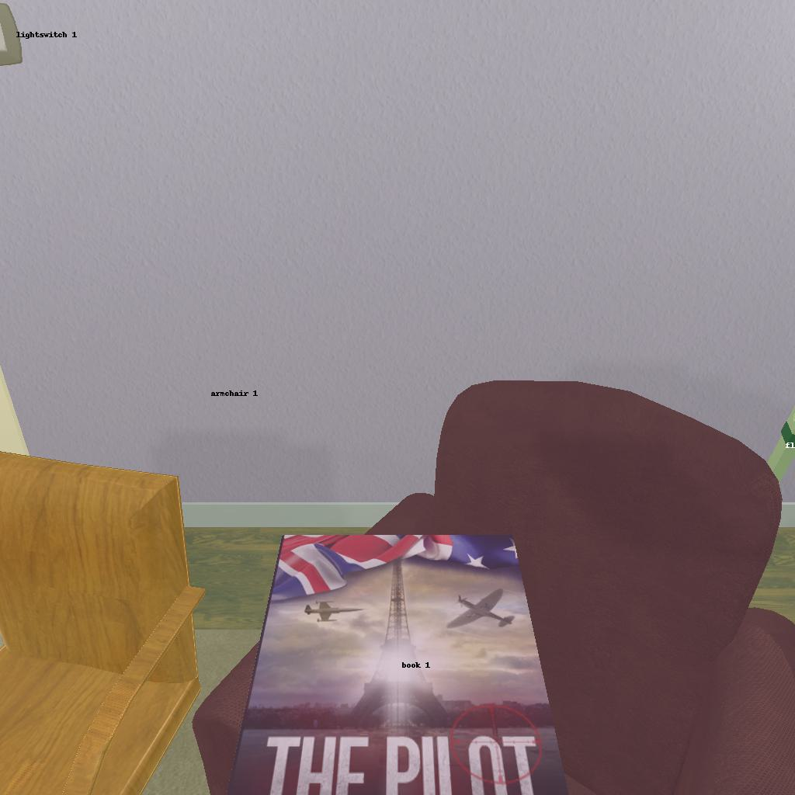

---------------------------------------------------------task: 5---------------------------------------------------------
--------------------------------------------------------------------------------------------------------------------------------------------------------------------
--------------------------------------------------------------------------------------------------------------------------------------------------------------------
Step:--------------------------------------------------------------------------11-------------------------------------------------------------------------------
----------------------------------------
VLM Prompt:
Image1:
Image2:
**Instruction**
1. Analyze the provided image to identify all visible household objects, focusing on those relevant to the task description "put some book on armchair."
2. Use the analysis of the image and the task hint "The agent must find an object of the desired type, pick it up, find the correct location to place it, and put it down there." to answer the question: what is the most reasonable action in the choices for the task description "put some book on armchair"?
4. Decide and write the answer using the template: The answer is: (i): , where i is the real number. If there is no desired object in the image, search every place based on **Initial Observation** to find the object. And if no one is exactly correct, choose a similar answer.
**Initial Observation**
You are in the middle of a room. Looking quickly around you, you can see armchair (1), sofa (1), coffeetable (1), drawer (1-4), sidetable (1-3), dresser (1)
**Answer Choices**
(1): go to sofa 1
(2): go to coffeetable 1
(3): go to drawer 1
(4): go to sidetable 1
(5): go to dresser 1
(6): go to drawer 2
(7): go to drawer 3
(8): go to drawer 4
(9): go to sidetable 2
(10): go to sidetable 3
(11): use floorlamp 1
(12): examine book 1
(13): examine armchair 1
**Answer**
Let's think step by step by following the instructions.
----------------------------------------
----------------------------------------
Original Response:
The task is to "put some book on armchair." From the image, we can identify that there is already a book (labeled "book 1") on an armchair (labeled "armchair 1"). Therefore, there is no need to search for a book or to find an armchair since both objects required for the task are already present in the scene.
Given the task description and the objects identified in the image, the most reasonable action to accomplish the task would be to examine the book on the armchair to ensure it is properly placed as per the task description.
The answer is: (12): examine book 1.
----------------------------------------
----------------------------------------
>>> Refine Original VLM Response and Get Pure Action: examine book 1
----------------------------------------
-----------------------------------------------------------------
Running time: 6.973029375076294 seconds
Total Money: 2.205430000000001
-----------------------------------------------------------------
-----------------------------------------------------------------
Text Observation:This is a normal book 1
-----------------------------------------------------------------
UNSUCCEED